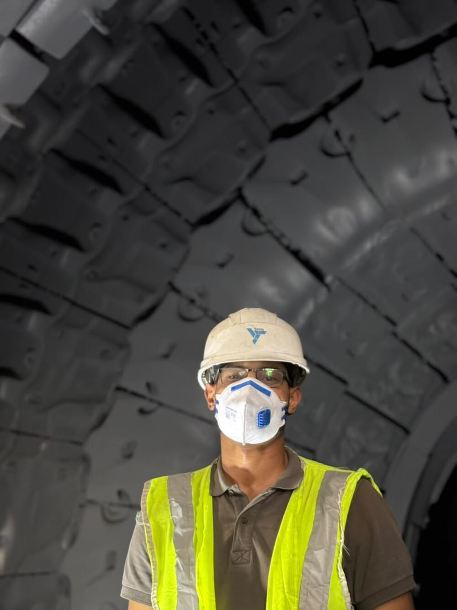
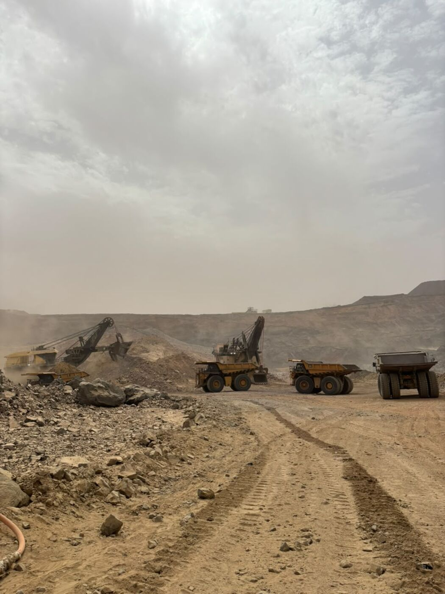
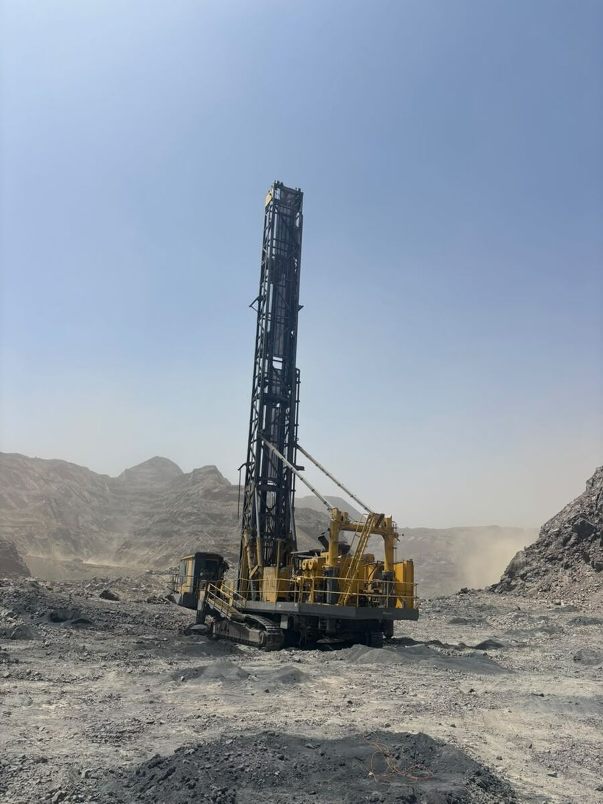
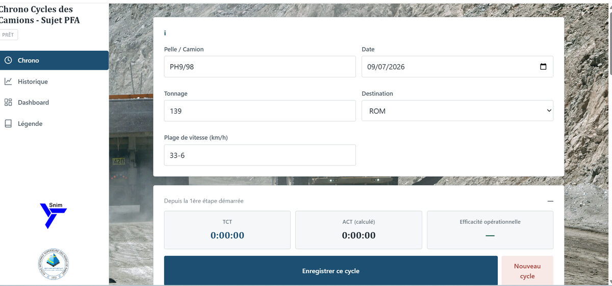
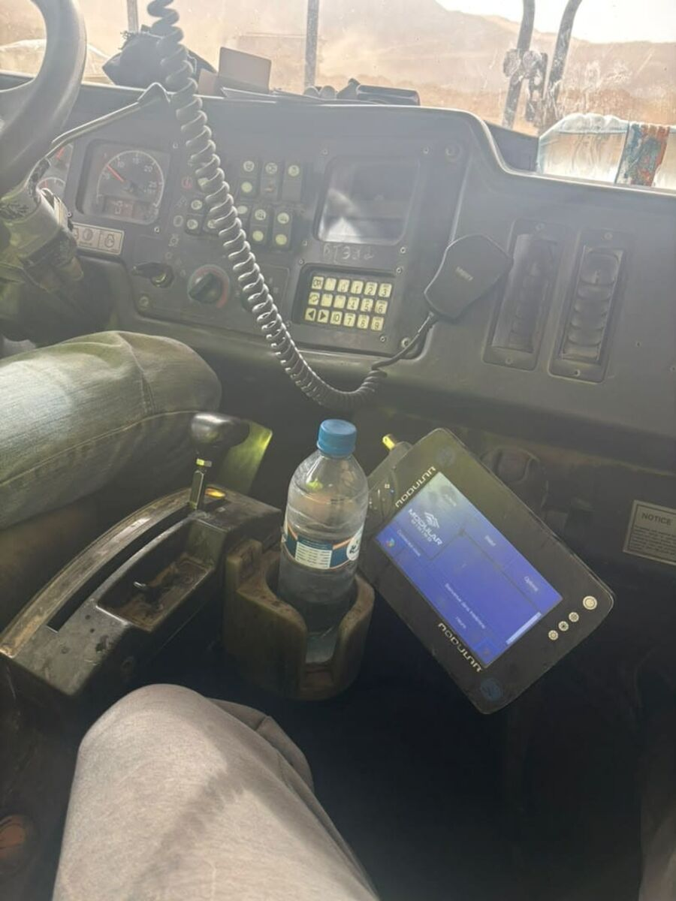

Stagiaire Ingénieur Production
Stage assistant ingénieur (juillet–septembre 2026) sur le secteur PB2-Est de la mine à ciel ouvert de Guelb El Rhein, le gisement de magnétite le plus riche de la SNIM et désormais le principal moteur de production du siège. Objectif fixé par la direction : une cadence de 3 Mt/mois (minerai et stérile confondus), soutenue par une flotte de 45 camions rigides CAT 789D couplée à des pelles électriques à câble (PH) et hydrauliques (RH).
Le suivi existant de la section Roulage/Chargement reposait uniquement sur les données du système de gestion de flotte (Dispatch FMS, Modular Mining) agrégées à l'échelle de toute la fosse. Cette approche masquait trois limites structurelles : des indicateurs calculés globalement sans distinction par secteur, une couverture réseau et des écrans embarqués partiellement défaillants sur plus de la moitié de la flotte, et une incapacité à qualifier la nature réelle des temps d'arrêt. Résultat : en juillet 2026, les indicateurs globaux affichaient une performance conforme, voire supérieure aux objectifs, alors que la production réelle du secteur ne représentait qu'une fraction de l'objectif — signe que ces indicateurs ne permettaient ni de diagnostiquer, ni de prévoir l'écart de production.



Chrono Cycle Camion — plateforme de mesure développée pendant le stage
Face aux limites du dispatching automatique, j'ai conçu et déployé sur le terrain une plateforme de chronométrage dédiée, baptisée Chrono Cycle Camion, afin de mesurer objectivement les temps de cycle réels des camions et les retards opérationnels qui les composent. L'interface (HTML/CSS avec Bootstrap, JavaScript) permet d'enregistrer, étape par étape, le cycle complet d'un camion — chargement, trajet chargé, bennage, trajet à vide — avec un traitement des données en Python côté back-end et une consolidation dans un fichier Excel exploitable statistiquement.
La collecte a nécessité une présence physique prolongée sur le terrain, y compris de nuit, afin de couvrir l'ensemble des conditions d'exploitation (relève, éclairage, trafic) susceptibles d'influencer les temps de cycle. Le tableau de bord intégré calcule automatiquement les indicateurs clés (ACT moyen, efficacité opérationnelle TCT/ACT, tonnage total) ainsi qu'un diagramme de Pareto des causes de retard, outil central du diagnostic présenté dans l'onglet suivant.


Sur 42 cycles chronométrés, le temps de cycle réel moyen (ACT) atteint 37 min 17 s pour un temps de cycle théorique (TCT) calculé à partir de la géométrie exacte des pistes (Surpac) de 17 min 53 s — une perte moyenne de plus de 8 minutes par cycle. Le diagramme de Pareto des retards détaillés fait ressortir trois causes qui concentrent, à elles seules, 80 % des pertes de temps cumulées :
- TQL — temps de queue au chargement (45 %) : présent dans 31 des 41 cycles valides. Cause première identifiée : défaillance du dispatching automatique (couverture réseau incomplète, écrans embarqués en panne sur plus de 50 % de la flotte), aggravée par l'hétérogénéité mécanique des pelles — la pelle PH5, dégradée, immobilisait le couple pelle-camion près du double du temps d'une pelle en bon état.
- TQT — temps de queue au bennage (23 %) : lié au même mécanisme de file d'attente côté concasseurs (CC1/CC2), amplifié par leurs arrêts inopinés.
- TGW-R — cédez-le-passage en ligne droite : cause directement géométrique. La largeur mesurée des rampes en lacet (22 à 34 m) descend, sur une portion significative du tracé, sous le minimum requis pour un croisement bidirectionnel (≈ 30 m pour un CAT 789D), contraignant les camions à s'arrêter pour se céder le passage.
- Retards liés à la vitesse : résistance au roulement recalibrée à partir des pentes réelles (2,2 à 3,4 % selon la rampe, contre 2 % en piste idéale), couche de roulement non compactée, et effet de convoi causé par des camions vieillissants plafonnant à 60–85 % de leur puissance nominale.
Pour chaque cause identifiée, j'ai chiffré l'impact attendu d'une action corrective ciblée, à partir des données mesurées sur le terrain :
- Double spotting au chargement : faire chevaucher la manœuvre de mise en position du camion suivant avec le chargement en cours élimine le TST du chemin critique — gain démontré de 5,6 min sur une file de 6 camions.
- Fiabilisation de la pelle PH5 : ramener son temps de chargement au niveau des pelles PH9/PH10 réduit le TQL en 6e position de 26,4 à 13,75 min, soit un gain de 12,65 min par camion affecté.
- Équilibrage actif du dispatching entre concasseurs : répartir le flux entre CC1 et CC2 plutôt que de laisser le dispatching orienter les camions indifféremment réduit le TQT d'environ 60 % pour une file de 6 camions.
- Élargissement des pistes en lacet : porter la largeur à ≥ 30 m sur l'ensemble du tracé éliminerait, en théorie, la totalité du TGW-R mesuré — soit 17,3 s par cycle en moyenne.
- Réhabilitation de la couche de roulement : ramener la résistance au roulement à ≤ 2 % (mélange stérile concassé + sable, CBR > 80, compactage > 95 %) et remettre en état les camions plafonnés en puissance.